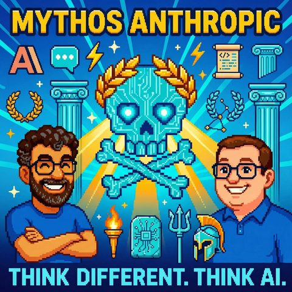

Mythos Anthropic
Read in EnglishThemen SoftwareentwicklungKI-AgentenAutomatisierung und Tools
33 Sekunden zur Folge, bevor du liest.
Worum es geht
Warum Skill Engineering das neue Prompt Engineering ist
Was passiert, wenn aus Prompt Engineering plötzlich Skill Engineering wird? Für diese Folge holen sich Mark und Jens ihren allerersten Podcast-Gast zurück ins virtuelle Studio: René, mit dem sie schon vor Monaten über Agents und das IOC-Modell (Intent – Operate – Control) gesprochen hatten. Die zentrale These der Folge fällt schnell: "Prompt Engineering ist gestern, Skill Engineering ist morgen", und zwar nicht nur für Agenten, sondern für ganze Organisationen.
Ein Skill, erklärt René, ist mehr als ein gut formulierter Prompt: orchestrierter Zugriff auf Tools, ausführbarer Code mitten in der Markdown-Datei (ja, auch Python-Snippets tauchen darin auf) und persistente Speichereinheiten, und das alles modellagnostisch, sodass derselbe Skill wahlweise mit Modellen von Anthropic oder anderen Anbietern läuft. Als Aufhänger dient der kurze Rückblick, wie sich seit der ersten gemeinsamen Folge N8N, Managed Agents bei Notion und die gesamte Modelllandschaft schon wieder verändert haben.
Die Pixel-Rennen-Analogie aus der Digitalkamera-Ära liefert die Einordnung: Irgendwann sättigt die reine Modell-Leistung, und das System drumherum entscheidet. Sehr konkret wird das, als René von seinem eigenen Skill erzählt, der alte GitHub-Repositories durchforstet, brauchbaren Code in eigenständige Skills überführt und den Rest als Python weiterlaufen lässt. Mit Verweis auf Andrej Karpathy spinnt die Runde das weiter: Statt ganzer Legacy-Codebasen forkt man in Zukunft nur noch das Markdown-File mit der eigentlichen Idee, token-optimiert, ganz im Sinne einer Jobs-to-be-done-Logik, bei der am Ende nur das Loch in der Wand zählt, nicht der Bohrer.
Ein Leadership-Paradox trägt die zweite Hälfte der Folge: Je mehr Geschäftsprozesse automatisiert werden, desto mehr Führung statt weniger wird gebraucht, weil jemand die Feedback-Schleifen des Agenten-Korpus strategisch steuern muss. Delegation wird damit zur Kernkompetenz, garniert mit der Analogie zum autonomen Fahren, wonach das Lenkrad ganz herauszunehmen manchmal sicherer ist, als auf menschliches Eingreifen im Ernstfall zu hoffen. Auf Organisationsebene wird es grundsätzlich: René zitiert Jack Dorsey mit der Warnung, jetzige Org-Charts nicht einfach in agentische Strukturen zu übersetzen: die alte Pyramide sei tot, Herrschaftswissen verliere an Bedeutung, ganz im Geiste agiler Methoden, die schon immer hierarchiefrei arbeiten wollten.
Kritisch wird die Runde beim Blick nach China: Kamera-Tracking in Fabriken zum Trainieren von Robotik, dazu ein Tool namens Anti-Distillation Skill, mit dem Mitarbeitende ihr wertvollstes Wissen aus abzugebenden Skill-Dateien wieder herausfiltern, bevor sie beim Management landen. Parallel dazu OpenClaw-Installationsdienste als Kiosk-Angebot in chinesischen Städten, während man hierzulande eher zögert und reguliert. Zum Ausklang plädieren beide dafür, Terminal- und Coding-Grundwissen als "Life Skill" zu begreifen, man muss nicht selbst installieren oder programmieren, aber ein Grundverständnis schafft Souveränität im Umgang mit der Technologie.
Transkript
00:00:00Willkommen bei Think Different, Think AI, dem Podcast von Mark und Jens.
00:00:07Zwei technologieverliebte Köpfe, die nicht nur über künstliche Intelligenz reden, sondern sie leben.
00:00:14Hier gibt es klare Einordnungen, echte Praxiseinblicke und einen frischen Blick auf das, was möglich ist.
00:00:20Verständlich, kritisch und immer mit einem Augenzwinkern.
00:00:24Hadi zum Nachdenken, zum Schmunzeln und vor allem zum Mitreden.
00:00:29Herzlich Willkommen zu Singt different, Singt AI. Heute um eine ganz besondere Folge.
00:00:39Mit mir dabei ist wieder Jens, hallo Jens.
00:00:42Hallo Mark.
00:00:43Und das Thema der Folge, ja. Abgesehen davon, dass Mark jetzt schon ein leichter Sprachfehler hatte.
00:00:50Geht schon richtig gut los. Lassen wir auch drin, keine Sorge.
00:00:52Ist unser Leben mit Anthropic.
00:00:56Keine Sorge, wir sind nicht fremdgegangen, aber wir wollen noch ein bisschen heute den Schwerpunkt auf das, was so mit und uns und bei uns und mit
00:01:06anthropic als Firma, was da so grundsätzlich passiert.
00:01:10Und bevor ich, wie es sich gehört, auch den Jens mal so Wort kommen lasse, möchte ich einfach damit einsteigen, dass mich anthropic ganz schön geärgert hat.
00:01:19Die letzten Tage, weil etwas passiert ist, dass mir eigentlich hätte verständlich sein sollen, aber ist mir gar nicht so
00:01:25verständlich dann in dem Moment war. Und zwar, ich probiere auch beruflich ganz
00:01:31viel mit Anthropic aus und habe ganz viel mit Claude Code. Das ist ja das
00:01:35Kommando-Zahlen-Interface von Anthropic, um mit den Modellen zu interagieren.
00:01:40Kommando-Zahlen-Interface, eine CLI, um damit wir einfach mal wieder auch ein paar Begriffe
00:01:45in den Raum geschmissen haben. Und wenn ich dieses CLI benutze, um den Modell
00:01:49Fragen zu stellen und Antworten zu kriegen, dann verbraucht das weniger
00:01:54tauchen, als wenn ich die API, also die Programmierschnittstelle, anspreche und dort
00:02:01ein String hinschicke und sage, mach mal was. Also wenn ich zum Beispiel das Modell
00:02:04sage, wie ist das Wetter in Karlsruhe, immer unabhängig davon, dass er dann
00:02:07Webrecherche machen muss und sowas, ist der Tockenverbrauch in Claude-Code, in
00:02:12der Terminaloberfläche, viel geringer, als wenn ich über die API gehe. Den
00:02:20Grund kann ich auch noch erklären, das ist ein bisschen Cliffhanger, wie in der
00:02:23guten Fernsehfolge und jetzt zur Werbung. Werbung bist du Jens? Was fällt denn dir ein mit das Leben
00:02:28mit Anthropic? Ich überlege die ganze Zeit, ist es Anthropic oder ist es Anthropic? Der, der
00:02:36es bezahlt, darf auch sagen, wie es heißt. Das ist so bei mir auch die Regel, wenn ich irgendein
00:02:41komisches Produkt kaufe und alle Leute mir sagen, du sprichst es falsch aus und ich dann sage,
00:02:46hast du es gekauft? Hast du es abonniert? Nein, dann darf ich auch sagen, wie ich es persönlich
00:02:51nenne. Aber gerne Zuschriften, das erhöht ja auch das Ranking überall, wenn man hier
00:02:55Kommentare schreibt. Sag nur doch einfach ab jetzt, Claude.
00:02:59Das wird ja viel einfacher. Claude. Ja, okay. Also mein Leben mit
00:03:05And Perfect Claude. Das ist, also hat er schon für eine Weile angefangen.
00:03:12Ich hab tatsächlich den Chatbot auch relativ frühzeitig benutzt. Bin dann
00:03:15aber lange, lange Zeit wirklich Open AI treu geblieben und bin erst vor ein
00:03:20ein paar Monate tatsächlich gewechselt, kurz bevor dieses Thema mit dem Open Clore noch
00:03:25losging, dass man dann extrem stark natürlich mit ein Phobics Cloud verbunden hat. Da bin
00:03:31ich gewechselt. Hab dann auch erstmal ganz normal das Chat Tool benutzt, hab den Import
00:03:37gemacht, hab so da gesehen, was alles im Prinzip auch eine OpenAI von mir gespeichert
00:03:44hat. Da war eine ganz interessante Sache drin, wenn man sich das da bei diesem Export
00:03:47gibt mir mal alle Informationen, die du über mich hast, damit ich das dann bei Cloud importieren
00:03:51konnte.
00:03:52Da dann gesehen, was da im Prinzip dann eigentlich in diesem Kontext der KI noch gespeichert wird
00:04:00über dich, damit sie die bessere Antworten, die nicht verkarten.
00:04:03Das darf man halt, wie gesagt, nie vergessen.
00:04:05Die Bots, mit denen ihr redet, die sind nicht vergleichbar mit dem Bots, die mit anderen
00:04:12Menschen reden, weil die immer ein bisschen anders reagieren.
00:04:14natürliche Gewichter. Die haben ihre Modelle im Hintergrund, die sind sehr ähnlich. Die sind
00:04:19auch über die Modelle übergreifen sehr ähnlich, weil Trainingsdaten auf der Welt auch sehr ähnlich
00:04:23sind auch. Das sind viele von diesen Modellen in den Antworten auch sehr ähnlich, das wurde
00:04:27auch schon gestellt. Aber in der individuellen Antwort, wenn ich diesen Modell-Kontext liefere
00:04:32und den Kontext kann ich über meinen Promting reinliefern, kann das über weitere Skills
00:04:37reinliefern oder kann das aber auch durch die Erinnerung, wenn ich das angeschaltet habe,
00:04:41dass diese Bots sich an dich erinnern. Und das war dann damals so die erste
00:04:44Moment, wo ich das dann auch mal ganz bewusst in Cloud reingepackt habe und
00:04:47wo ich mir so ein bisschen drüber nachgedacht habe, arbeite ich weiter mit dieser Chat-Oberfläche
00:04:51zusammen oder probiere ich nicht andere Funktualitäten aus, wie zum Beispiel den Claude Desktop oder
00:04:57Claude Code, wie er heißt, den man sich dann auch über entweder als Applikation installieren kann
00:05:04oder eben auch, wie der Markt das gerade beschrieben hat, oder so ein Terminal, kann man sich das auch
00:05:08unterladen und kann dann im Terminal mit diesem Code Agent, der auch tatsächlich Code direkt
00:05:14auf deiner Maschine schreiben kann, eben arbeiten kann. Und das mache ich gerade. Also ich bin
00:05:17gerade so ein bisschen, hat ihr das ja schon mal erzählt, gerade immer noch in einer sehr
00:05:21langsamen Orchoclaw Instellation, weil ich da sehr, sehr sicher mache und da sehr, sehr genau
00:05:25wissen möchte, was da eigentlich passiert im Hintergrund und selber auch noch paar Sachen ausprobiere,
00:05:29wie so ein Memory da aufgebaut werden kann, wie so ein Second Brain, wie Karpathy,
00:05:34das diese Woche genannt hat, aufgebaut werden kann in so wiki-Style mit so MD-Pfiles. Aber
00:05:38aber da arbeite ich extrem eng mit Pfaffig zusammen, weil ich so ein bisschen gucke,
00:05:42mit Pfaffig gibt mir die Anleitung, erklärt mir, was ich da in den Terminal eintippen soll,
00:05:47wie das funktioniert und dann auf der anderen Seite ist der OpenClaw, die auch connectet
00:05:51ist mit einer API, mit der so, so, so, so, so, so, so, net, so, net, 4, 6 Versionen,
00:05:57korrigieren wir mal.
00:05:58Best Benutzer darf's benennen.
00:05:59Okay.
00:06:00Also auch ein Modell, das aktuell Modell quasi auch, dass man da nutzen kann, das
00:06:05habe ich quasi mit Open Cloud per API angebunden.
00:06:09Und, Mark, sorry, da muss ich noch ganz kurz los werden.
00:06:12Und letzte Woche voll die Kohle bezahlt.
00:06:14Ich habe irgendwie an zwei Teilen viel zu viel Tokens verbrannt.
00:06:19Was auf der einen Seite gut ist, dass man das mal so selber sieht,
00:06:22wenn man nicht so drüber nachdenkt, weißt du, wenn die
00:06:24ganze Zeit immer nur Chat ist mit den Chatbots,
00:06:26dann und das im Prinzip in dieser normalen Abogebühr
00:06:28verschwindet, die man da bezahlt, dann sieht man eigentlich
00:06:30gar nicht, was man da so täglich verbrennt in dem Moment.
00:06:32Und wie wichtig es jedenfalls auch ist, genau drüber nachzudenken,
00:06:35welche Daten eigentlich hin und her geschoben werden. Das habe man so ein bisschen vergessen.
00:06:40Und wenn man dann so API-Kosten bezahlen muss und dann auf einmal der mühsam aufgebaute Bot,
00:06:45der Cloudbot, der dann im Prinzip nicht mehr antworten konnte über Telegrammier,
00:06:51weil er halt leider das Limit erreicht hat von der API, dann wird einem bewusst, was da alles noch
00:06:55im Prinzip an Technik hinterfunktioniert und dass man dann fängt man auch wieder an,
00:06:58andersüber nachzudenken, wie kann ich das optimieren, wie kann ich meine Kontextlänge optimieren,
00:07:02optimieren, ähnlich wie jetzt wieder viel Räder, aber jetzt der natürlich wieder freulich zum Wortkombassern.
00:07:09Ich habe ja auch mal irgendwann gehört, dass ein großer Promt effizient ist als viele kleine, weil
00:07:15die ganze Konversationen ja ständig bei
00:07:17weiteren Absänden neuer Promts ebenfalls Tokens wegfräst. Aber ich habe ja vorhin gesagt, so ein bisschen Cliffhanger.
00:07:24Ja, ich mache schon mal einen kleinen Teaser und dann löse ich den Cliffhanger auf, weil du sagst, du machst es besonders langsam
00:07:30langsam und dafür besonders sicher. Da haben wir nachher auch noch mal was aus dem Hause aus
00:07:35Schropwick, wo sie es etwas langsamer machen, um es sicherer zu gestalten, aber nicht für
00:07:40sich, sondern für andere. Aber da kommen wir gleich noch zu. Ich möchte noch auflösen,
00:07:45was bei mir der Fall war. Das Thema Hör, wieso ist eigentlich der Tokenverbrauch so
00:07:48viel höher, wenn ich außerhalb der Klot-Anwendungen mit Klot rede. Es liegt schon untergreifend
00:07:55daran, dass auch ich wieder vergessen habe, dass nur weil ich ein Text in eine Körserstelle
00:08:01schreibe, hallo Welt, wie ist das Wetter, oder sonst was, das Ausdruck rum noch ganz
00:08:05viel passiert. Und die Software, die Anthropic uns dahin stellt, die Mach-Caching, die Mach-System-Proms,
00:08:13die haut noch ein ganzes Sack von Informationen mit, die bei mir natürlich völlig unoptimiert
00:08:18waren. Und wenn man sich das mal vorstellen will, so sinngemäß die Frage, die ich
00:08:22Stelle kostet 50 Tokens, wenn ich sie mit dem System mache und 5.000 Tokens, wenn ich sie nicht mit dem
00:08:29System mache. Jetzt kannst du sagen, wenn juckt das schon, aber wenn du dir überlegst, wie viele
00:08:33Tokens habe ich, falls in die Anfragen komplizierter als Wetter, vielleicht keine Ahnung, hier und
00:08:38da, in Ananas, was auch immer, dann wird man schon merken, dass man da ganz schnell, wie zum
00:08:43Beispiel bei einer Open-Claw-Installation, in größere Gefilde kommt, weil ich meine,
00:08:47ich bin ja selbst persönlich Besitzer des Claude Max 20x Plans. Das ist das größte,
00:08:54was du als Abo kaufen kannst. Danach musst du Scheine einwerfen in Form von Kreditkartenfreigaben.
00:09:00Und ich war sehr froh, weil ich gerate fast täglich über dieses Limit rüber. Und wenn
00:09:06er dann sagt, kein Problem mag, du kannst ab jetzt auch Pay Per Use machen, so was von
00:09:11von, gib mir doch deine Kreditkarte, habe ich einmal gemacht, habe aber nicht gesagt
00:09:16AutoCharge, sondern gesagt, hier sind 40 Euro, viel Spaß. Und es fühlte sich so ein bisschen
00:09:22an wie heute Verbränner fahren. Du hast für 40 Euro getankt und kommst nicht weit.
00:09:27Ja, du quasi, du hast schon wieder während du die Tankstelle verlässt, so eine leere
00:09:32Tankanzeige, weil der so schnell diese 40 Euro weggefräßt hat, der Tokenverbrauch,
00:09:37Irgendwie hat man auch das Gefühl, dann wollen sie extra charge, das Unterstellung ist persönlich
00:09:42das Empfinden.
00:09:43Und was ja auch passiert ist mit Anthropic, sie haben ja für Open Claw beziehungsweise
00:09:49allgemein für die aus ihrer Sichtzweckentfremdung ihre Subscription Keys, ja auch jetzt entweder
00:09:56angekündigt oder durchgezogen, dass man das eben nicht mehr für Open Claw einsetzen
00:10:01kann, weil ich kann mir schon vorstellen, wenn du so ein System hast, das sich sagt
00:10:06Hier ist eine CPU und hier ist Energie. Das verhält sich jetzt wie Kohle und Ofen. Ich schütte
00:10:12rein, damit schön warm ist oder damit schöne Dinge ausgerechnet werden, dass das jetzt nicht ganz
00:10:17das Geschäftsmodell ist von Anthropic, dass jeder User, egal welchen Plan er abschließt,
00:10:22diesen bis zum Maximum auch ausnutzt. Ja, wo du gerade 5000 Tokens hast, ich kann das
00:10:28nochmal wiederholen. Ich habe dann tatsächlich letzte Woche irgendwie 190.000 bis 210.000
00:10:33Tokens pro Message rüber geschickt und das hat natürlich dann auch dazu geführt, dass
00:10:37meine mühsam drauf bezahlten Euros dann relativ zügig verbrannt sind, also das, was du gerade
00:10:43bestehen musst. Das war dann relativ zügig weg. Aber da ist auch noch mal so ein Ding,
00:10:48wenn man immer viel darüber redet, die KI macht jetzt irgendwie alles einfacher und so was,
00:10:53so ein bisschen aktiverständes hilft dann schon ehrlicherweise. Also als man das dann
00:10:58aufgefallen ist, bin ich dann natürlich in der Direktion, weil ich weiß nicht,
00:11:02Aber ich wusste, woran es jetzt lag, wir sind in der Diskussion mit den Kais gegangen und dann stellte
00:11:06sich heraus, da kamen relativ schnell auch, dass ein Kesh gar nicht angestattet war. Also ich
00:11:10habe dann immer fröhlich quasi auch immer wieder alle Informationen bei jeder Message
00:11:13neu hochgeschickt. Da hatte ich irgendwas, ich weiß genau, wo es jetzt war, genau nicht richtig
00:11:17eingestellt oder einstellen lassen in dem Moment. Jetzt weiß ich, was ein Kesh ist.
00:11:21Deshalb habe ich dann gesagt, okay, das kann schon mal helfen. Da haben wir im Prinzip schon
00:11:24einzelne Größenprobleme gelöst. Dadurch hat man sofort schon im Prinzip einen großen Teil
00:11:28wieder senken können, weil ich nicht mehr quasi jeder Message alle Informationen über mich quasi auch dann weitergeleitet habe.
00:11:34Also das heißt auch da immer wieder, ja, es ist viel einfacher geworden durch KI auch Sachen zu machen.
00:11:41Wenn man sich in diese Gefilde der Agents auf dem Rechnermas installieren,
00:11:46tatsächlich etwas produzieren bewegt, dann muss man tatsächlich heutzutage auch immer noch
00:11:51wenigstens so ein Basiswissen haben, damit man nicht ganz auf die falsche Fertiglog wird,
00:11:56manchmal und sich dann hinterher in Prinzip wundern. Ich glaube, es geht trotzdem gut. Ich
00:12:00will jetzt auch nicht sagen, es geht nicht. Man kann auch Apps bauen heutzutage, ohne dass
00:12:05man vorher gemacht mit IT zu tun hat. Man kann wunderbare Kampagnen bauen, Inhalte bauen
00:12:10für seinen Laden, den man irgendwie hat, Werbung schalten, alles mitgeschmacken, da kreativ
00:12:14mit erzeugen. Das geht natürlich alles und auch Software schreiben. Aber es ist
00:12:19tatsächlich, glaube ich, einfacher, wenn man so ein bisschen IT-Background hat, weil
00:12:24Begrifflichkeiten sind ähnlich. Also auch die Maschinen benutzen natürlich die Gleichenkeiten. Die Architektur im Hintergrund ist immer noch das Gleiche.
00:12:30Es gibt immer noch E-Brow Server, es gibt immer noch sowas wie Ports, die offen sind oder nicht offen sind.
00:12:35Oder wenn ihr euch damit beschäftigt, auch ukale Installation zu haben, dann geht es auch einfach ganz klassisch um Rechteverhalten.
00:12:41Wer darf denn auf welchen Ordner eigentlich schreiben? Welche Schreib- und Leserechte hat denn so ein Ordner dann auf einem Rechner?
00:12:47Und die müssen halt umgeschrieben werden. Und das muss man erstmal so.
00:12:50so. Dort ist jetzt auch nicht jedem bekannt, dass es solche Sachen einfach gibt. Und das ist glaube ich
00:12:54dann wichtig, das zu wissen. Man kann sich da gut helfen lassen von den, zum Beispiel von Entvofic dann
00:12:58im Prinzip. Also ich mache viele von diesen Sachen, die ich da gerade mache. Lass mich auch mal wieder
00:13:02versichern, gib mir die Programmieranweisung oder die Anweisung im Prinzip ein Ordner schreibbar
00:13:07zu machen über das Terminnel. Weiß ich auch nicht mehr den Empfehl. Lass mir das dann aber
00:13:10erklären. Also jetzt sagt dann auch immer wieder, das ist halt süß, ich muss es dann immer wieder
00:13:14dreimal sagen, weil die Maschine denkt dann doch immer wieder jedes Mal, jetzt hat das doch
00:13:17wahrscheinlich kapiert. Ich sage immer, nein, ich bin immer noch dumm. Ich habe es schon
00:13:21wieder vergessen, was jetzt dieser Befehl hat und das Computer die künstliche Intelligenz
00:13:25ist, ist vor dem Rechner keine Intelligenz. Ja, bei einem Fan ist es KI. Entschuldigung,
00:13:30das konnte ich nicht auf der Straße liegen lassen. Das hat danach gerufen. Ich verzeihe
00:13:35hier. Danke schön. Du hattest jetzt wegen hier über welche Begrifflichkeiten man
00:13:41Stolpert und das Thema Agente Carnes ist dieses ist ja auch was das ich sag mal gerade jetzt auch mit aus anthropic die letzten
00:13:49Tage als bevor wir aufgenommen haben oder wochen noch mal durch den ertag geisterte weil 31. März
00:13:572026
00:13:58hat aus anthropic ein fehler begangen also es gab einen ich sag jetzt mal menschliches versagen wir können darüber vielleicht noch mal genau
00:14:06unterhalten weil nämlich versehentlich
00:14:09ein
00:14:10Datai veröffentlicht wurde, die man normalerweise braucht, um Source Code zu debacken.
00:14:15Die wurde veröffentlicht, stand aus Versehen, sage ich mal, frei zugänglich zur Verfügung und
00:14:22ein Praktikant von, ach Gott, ich muss die Firma, habe ich jetzt vor lauter und lauter vergessen,
00:14:28hat das gefunden und gleich auf X gepostet und was war die Konsequenz?
00:14:32Das 512.000 Zeilen.
00:14:35Claude Kot ein in TypeScript geschriebenen Kotbasis
00:14:41veröffentlicht wurde. Also nicht das KI-Modell, also nicht Opus Umwissals heißt,
00:14:47sondern die Software mit der man diese Modelle anspricht.
00:14:52Und das hat echt Wellen geschlagen. Also aus Robics selbst hat er es scheinbar versucht mit anwaltlicher Hilfe.
00:14:59Da gibt es ja irgendwelche Dinge, die dann quasi dafür sorgen, dass Kopierschutz verletzendes Material aus Netz gelöscht wird.
00:15:05Aber es gab zig Tausende von Repros, die das dann versucht haben, zu Klonen für sich nachzubauen.
00:15:11Es gibt Zick-Entwickler, die das dann auch in anderen Programmiersprachen haben übersetzen lassen.
00:15:16Wahrscheinlich auch von Claude. Das ist ja überhaupt nicht schwer, ne?
00:15:18Nehmt das Bau um, mach jenes.
00:15:20Es gibt Angriffsversuche, ja. Es gibt böse Jungs und es gibt auch böse Mädels,
00:15:25aber ich sage jetzt mal, die bösen Jungs sind hingegangen und haben,
00:15:29sinngemäß hier findest du Claude Code und haben das mit Melvair infiziert und so ein Download angeboten.
00:15:35Und was halt das krasse ist, mal unabhängig davon, dass das ein Fehler war, der nur für ganz, ganz kurze Zeit bestand, das wurde relativ schnell wieder gefixt, das ganze Problem, also die öffentliche Verfügbarmachung, die Leute haben es ja trotzdem studiert, es gibt Artikel darüber, wo man lesen kann, wie entwickelt, aus Anthropic und dass die auch nur mit Wasser kochen, aber teilweise schon Kohleansätze haben, die Prompts, mit denen sie gegen die Maschinen gehen, ist veröffentlicht worden, wie sie mit Tools,
00:16:04Also MCP und wie der ganze krames arbeitendes veröffentlicht worden, wie sie mit Speichermanagement umgehen ist veröffentlicht worden, wie sie Multiagentensteuerung machen, das ein Agent, ein Skill abarbeitet und dann mehrere Agents heraus spawnen, dass es ein Kairos-Modell gibt, ein automatisierten Daemon, nicht Daemon in Form von Lucifer, sondern Daemon in Form von ein Dienst, der automatisiert im Hintergrund läuft, der Dinge aufräumt und vorbereitet und hast nicht gesehen.
00:16:34Also lauter spannende Sachen und ich muss zugeben ja ich ich auch mich ich habe mir den code auch angeschaut und ich habe auch was tatsächlich draus gelernt.
00:16:43Falls es dich interessiert würde ich das sogar sagen interessiert sich mach euch.
00:16:47Mach euch wenn jetzt nein gesagt hätte es das wäre so wie viele Leute vor der Kamera oder vor dem Mikrofon.
00:16:53Und zwar, du weißt ja, ich liebe Skills und wir werden demnächst auch eine spezielle Skill-Folge wieder mit Gast haben, aber da wollen wir zu viel eintauchen.
00:17:02Und ich habe mir den ganzen Kram nicht angeschaut, weil ich mir hier die nächste Runtime für Agenten bauen will, sondern weil ich gucken wollte, wie arbeitet Claude eigentlich mit Skills.
00:17:12Also was ist dem denn wichtig? Also was ist dem wichtig, da hingehen, dass die Reihenfolge des Skills auch wirklich beachtet?
00:17:18beachtet. Was ist dem wichtig, damit er weiß, dass ein Skill
00:17:22und das Skills öffnet und dass die Unter Skills parallel laufen und dass du
00:17:25vielleicht auch Skills andere Modelle mitgeben kannst und sagen kannst, das
00:17:28läuft hier mit Modell A, das läuft mit Modell B und lotte Sonne Kram und
00:17:34hat mir dann quasi so ein bisschen so mein eigenes Best Practice zur Seite
00:17:37gelegt. Worauf möchte ich achten, wenn ich Skills baue und jetzt kannst du sagen,
00:17:42alter weißer Mann, der selbst erfüllende Prophezeiung, ich habe
00:17:45das Gefühl, die Skills laufen besser. Punkt. Aber nur reingeschaut, nicht kopiert,
00:17:52nichts veröffentlicht, viele Grüße gehen raus. Ja, das ist auch wieder witzig, wie das Webreakt
00:17:58geht. Ich glaube, wir haben jetzt versucht 8000 Github-Repositories, wo im Prinzip der
00:18:04Code war, anzuschreiben und auf dem Netz zu nehmen, gelingt sie nicht, dann hieß es wieder
00:18:07nicht, sie waren es noch gar nicht. Aber ich verstehe das auch, guck mal. Deine
00:18:12Krone wählen werden da quasi aufgrund eines Fehlers zum nicht zum Kauf, sondern zum
00:18:17Reingucken da geboten. Aber du kommst ja nenn nicht mehr an. Ja, das ist das
00:18:25Antwort. Also seit, sagen wir mal, wir haben jetzt wieviel Jahre das Web und wieviel
00:18:30Jahre gab es damals schon, also wie früh gab es schon Beispiel, schon Napster und
00:18:33andere Sachen, wo gezeigt worden ist, wie massiv Daten, nie gehört ich auch nicht,
00:18:38Aber die Musikdaten damals zerteilen eben so völlig gestellt worden sind und andere Sachen.
00:18:42Ja, das war nach vorderen Zeiten wahrscheinlich.
00:18:44Na, ich kenne nur Schaltplatten.
00:18:46Ich glaube, eine, zum Beispiel eine Variante des
00:18:48diskopierendes Kodes, von dem ich gehört hatte, ist, dass jemand einen
00:18:53Screenshot des ganzen Kodes angelegt hat.
00:18:55Das heißt, der muss also irgendein Screenshot-Tool genommen haben.
00:18:57Es gibt ja Screenshot-Tools, die auch durchaus scrollen können.
00:18:59Das heißt, der muss sich kurz irgendwo dann quasi im Browser komplett
00:19:03angeguckt haben, diese 500.000 Zeilen oder wieviel das waren und hat die dann komplett
00:19:06Das heißt es gibt auch also ein Bild, das natürlich von einer anderen KI wieder ganz einfach ausgelesen
00:19:13werden und der Text raus extreiert werden kann.
00:19:16Das kann jedes Google-Handy, jeder Google-App, die im Prinzip darüber verfügt, dass die wie
00:19:20Text extreiert werden kann.
00:19:21Selbst das Google-Handy kann das.
00:19:22Dieser Kommentar, bitte an Jens, ja, diesmal war ich das nicht der hier dieses Bildchen
00:19:27gemacht hat.
00:19:28Selbst das Google-Handy kann das.
00:19:29Und Google-Apps können das.
00:19:30Ich bin ein großer Freund Google-Freund.
00:19:31Ja, vor allen Dingen Google, keine Randnotiz, Google hat ja auch schöne neue Modelle
00:19:34rausgebracht, die schönen Lokalen laufen, wo die hier auch dir dein AI Studio als App
00:19:39auf dem iPhone beispielsweise auch starten kannst und hier Übersetzungen und Bildbeschreibungen
00:19:45und so.
00:19:46Das ist auch ganz lustig.
00:19:47Hat es auch mit Skills ausprobiert, ist er dann leider ausgestiegen, weil er meinte
00:19:50meine Skills wären zu groß, aber das war auch verständlich irgendwie.
00:19:53Ich hätte auch nicht erwartet, dass es damit hält.
00:19:56Aber ich finde trotzdem, auch hier merke ich wieder, du nimmst wahr, dass etwas in
00:20:02der Welt passiert.
00:20:03Da wird Code gelegt, da spült sich auch bei dir durch die Timeline, da musst du gar nichts Blödes machen, du machst einfach den Rechner auf, bist auf Social Media, hast eine i-Bubble und dann hast du halt irgendwie 78 Posts, die auf irgendwelche Getreepost zeigen, irgendwelche Kenntnis-Dokumente zeigen, irgendwelche Artikel zeigen, irgendwelche Reddit-Beiträge zeigen, keine Ahnung, was.
00:20:23Du kannst dem Ganzen nicht entgehen, aber ich habe trotzdem die ersten Stunden,
00:20:29war mir eigentlich gar nicht bewusst, was da im Grunde auch für ein Learning für Menschen drin ist,
00:20:34besser mit dem System von Autophobik umzugehen und ich habe mich dann tatsächlich auch gefragt,
00:20:40wieso um alles in der Welt veröffentlichen, die Jungs und Mädels dort mir keine Ahnung,
00:20:4530 Seiten, wie schreibe ich ein Plug-in? Und 20 Seiten, wie schreibe ich ein Skill?
00:20:50Aber das, was dann quasi nochmal so die letzten 10% rausholt aus dem Konklomerat, was es stabiler
00:21:00macht und sowas, das irgendwie nicht.
00:21:02Ja, wobei es gewinnt das, also schwierig.
00:21:05Also, so zwei Seiten, wie gesagt, das eine, was ich noch sehenführen wollte, also ich
00:21:10glaube, es ist schwierig, dann einmal veröffentliche Sachen wieder aus dem Netz rauszubekommen,
00:21:13das wird nicht funktionieren, ehrlicherweise, da kannst du dich glaube ich, abmögen,
00:21:15wie du willst.
00:21:16Blick auf die gesellschaftliche Entwicklung, auf was du gerade beschreibst, ist es natürlich
00:21:21eigentlich so, dass du sagen musst, die sind ja auch jetzt, na also wenn alles so viel schneller
00:21:27durch KI geht und alles so viel reproduzierbar ist und auch Karpathy hat jetzt auch darüber
00:21:32geredet, dass er gar nicht mehr, weißte, Kot tatsächlich teilt, sondern vielleicht
00:21:36eher dahingehend zu sagen, er teilt seine Skills oder teilt Ideen, weil dein LMM kann
00:21:42dann im Prinzip, dass im Notfall auch wieder nachprogrammieren auf seine Art und Weise und speziell
00:21:47auf deine Umgebung und deine Anforderung spezialisiert. Das ist eigentlich der eigentliche Code gar nicht mehr
00:21:52das Wichtigste. Wir bewegen uns, glaube ich, schon in so eine Welt rein, wo man auf der einen Seite
00:21:56sagen muss, ja, das wird alles eigentlich Open Source, das ist auch schlauer, weil dann können wir
00:21:59viel schneller quasi auch daraus etwas lernen und das Anpassen an unsere Gegebenheiten,
00:22:03das könnte effizienter sein. Auf der anderen Seite verstehe ich natürlich auch ein Multi-Billion-Dollar,
00:22:08da, viermal, die vielleicht auch Sachen quasi schon entwickelt hat, die aber noch ein bisschen
00:22:14das im stillen Kammerchen hält, weil sie natürlich gerne vielleicht irgendeinen Marketingmoment
00:22:19ausnutzen möchte, um dann ihren Börsenkurs hochzutreiben oder den Börsengang fortzubereiten
00:22:24oder irgendwas anderes, um da auch gegebenenfalls das Geld, das sie dann ausgeben, auch
00:22:28irgendwie auf der Nebisart wieder reinzuholen.
00:22:30Ich glaube, das sind natürlich so Sachen, die da passieren, deshalb haben sie wahrscheinlich,
00:22:33geben sie die diese 10 Prozent von den Logare gesprochen, das vielleicht am Anfang
00:22:37noch nicht.
00:22:38100 Prozent fast gegeben, ist auch okay. Wir werden daraus gelernt haben.
00:22:42Inklusive so ein kleines Tamagotchi, den du dir in dem Terminal aktivieren kannst,
00:22:46die werden wir daraus gelernt haben, aber ich finde das ja auch in sagen
00:22:49meinen Anführungszeichen doppelt lustig. Wir kommen ja vielleicht nachher noch auf
00:22:53das Thema, vielleicht zumindest mal aus der Serie, mythen und sagen, wie das
00:22:57eventuell passiert sein könnte. Was ich aber vorher noch zum Besten geben will
00:23:00ist, es ist, wie gesagt, gefühlt ihre Kronju weder. Okay, sie haben nicht ihr
00:23:05Modell veröffentlicht, wie gesagt, dass es ihr nicht aus den Händen geklitten, fairer Punkt, aber
00:23:09trotzdem Claude Coach, das ist ja etwas, dass zumindest mal jeder Software-Enwickler, würde ich mal behaupten,
00:23:14oder eine Mehrheit der Software-Enwickler, gerne mal einen Blick reingeworfen hätte oder reinwirft.
00:23:18Und jetzt reden wir quasi davon, dass der Öffentlichkeit zuhängig wurde und man quasi
00:23:24einen Blick werfen konnte und das Thema Security damit jetzt, wie sagt man es da eingehend
00:23:28angeschnitten ist, dass dieses Geheimnis von Anthropic veröffentlicht wurde, nicht Kundendaten
00:23:33und sowas, aber das Geheimnis von Anthropic.
00:23:35Was erreicht mich jetzt quasi im Newsfeed ganz frisch, die Meldung, dass Anthropic Managed
00:23:42Agents anbietet.
00:23:43Also eine Suite von APIs, damit Entwickler in der Lage sind, Gehostete-Karrieren zu erstellen.
00:23:53Das heißt, Anthropic stellt dir eine Sandbox, also dass das Ding quasi nicht ausbricht und
00:23:59in einer sicheren Umgebung läuft, dass keiner reinguckt, mit State Management, also dass
00:24:03das Ding immer weiß, in welchem Zustand es sich befindet, mit Authentifizierung, also
00:24:07was darf es und als was agiert es, mit Fehlerbehandlung zu betreiben und das Ganze zu einem Preis,
00:24:15der im Grunde dem bisherigen Tokenpreis entspricht, nur irgendwie 0,08 US-Dollar, was sind
00:24:21das?
00:24:22US Cent?
00:24:23Ja, keine Ahnung.
00:24:24Grüße gehen raus an die international-affineren Menschen,
00:24:27Prozessinstunde abrechnen und das, das auch schon einige für nutzen würden, ja, also Notion,
00:24:33wir hatten ja auch Notion, Grüße an Dirk, hier in der Sendung, die das einsetzen, oder Asana.
00:24:39Ja, ja, wo das noch ist, die, also ich bin gerade auch mal drauf, ne, ich gucke es mir gerade in der
00:24:45Cloud-Grode-Solo an, da ist auch tatsächlich das Manage-Aid und sie auch new schon angekündigt,
00:24:49ich hab die Funktionität auch schon, ich hab es ja nur die Ausruhe, aber ich sehe jetzt zum Beispiel bei den Quick-Starts,
00:24:53Da sind dann so ein paar, dass man sich so ein Sport-Agent bauen kann. Feedback meiner.
00:24:57Und da sind nicht genau die Firmen, die du gerade benannt hast.
00:25:00Da ist ein Notion schon vorinstalliert quasi als Beispiel.
00:25:03Asana ist drin, Slack ist dabei, wenn ich das eigentlich das eigene erkenne.
00:25:06GitHub ist natürlich dabei, dass ich GitHub Sachen auswerten kann.
00:25:09Also da sind Konnektoren schon drin, wahrscheinlich auch von diesen Firmen, die sie jetzt auch einsetzen.
00:25:13Das ist natürlich auch so, wie spielen sich auch die Bälle Zeit zu.
00:25:17Ich finde das nicht schlecht, weil das natürlich eine gute Lösung ist, einfach zu sagen,
00:25:20Du musst es nicht so kompliziert machen. Du bist gegebenenfalls nicht irgendwie in einer Agent-Welt,
00:25:25wie ich das gerade probiere, auf so einer lokalen Installation oder du bist nicht in einer, wie du
00:25:29gar nicht beeinflussen kannst, sondern du hast hier im Prinzip anscheinend sehr, sehr strukturiert
00:25:34aufgebaut mit Extra Credential Vault, wo du auch im Prinzip die API Keys und sowas ab sich die
00:25:40speichern kannst, weil wie gesagt, wenn man so eine Open Cloud Installation macht, dann
00:25:43passiert jetzt ganz leicht, dass das irgendwo in plaintext steht und jeder mitlesen kann,
00:25:47wenn er das möchte oder der, ob das auch gerne frei gibt oder sowas.
00:25:50Also da muss man ein bisschen gucken, dass man das macht.
00:25:53Und das ist jetzt hier in so einer Umgebung, da einfach schon mal alles sauber, gut aufgebaut und aufgeräumt.
00:25:57Ich glaube, das wird diesen Thema nochmal muss geben, dass man sich da halt auch in dieser Umgebung,
00:26:03wenn man jetzt schon mit Code arbeitet, was, glaube ich, momentan eines der meist genutzten,
00:26:09wobei das weiß ich gar nicht, aber einer der mit am häufigsten erwähnten Programmierumgebung ist,
00:26:14wo ich sage, aus dem, aus diesen Newsfeets, die ich so lese, aus den Gesprächen, die ich
00:26:18so führe, kriege ich mit, dass eigentlich fast jeder Entwickler momentan sehr gerne
00:26:23mit Code zusammenarbeitet, um tatsächlich Programme, Software zu produzieren.
00:26:30Also ich könnte mir auch vorstellen, ne, dass wenn du in Zukunft Apps, Webseiten,
00:26:34keine Ahnung, was hast, dass du dann mit so einem Backend, das dir quasi einen
00:26:40Agenten in einer geschützten Umgebung bereitstellt, dass der quasi auch, ich sage mal, all das
00:26:47mit, mit am Board hat, was du sonst dir mühsam irgendwie mit AP herein deklinieren würdest
00:26:54und versuchen müsstest, wo hoste ich denn das, wo orchestriere ich das, denn wie sorge ich
00:26:59denn dafür, dass wenn mehrere gleichzeitig was von dem Ding wollen, wie sorge ich
00:27:04für Langlebigkeit der Sessions, ja, wie sorge ich dafür, dass wenn da vielleicht
00:27:08ausführliche Dinge laufen, dass dieser Agent teilweise auch stundenlang laufen kann, dass
00:27:13es dann vielleicht ganz cool ist, wenn du jemanden hast, der sagt, du pass mal obacht, ist gar
00:27:17kein Problem, hier ist eine API, so kannst du es ansprechen, ich kümmere mich um alles,
00:27:23habe die Ehre, das ist so ein bisschen der Agent App Store, so pack dein Agent hin,
00:27:30ich konsumiere das, kümmere du dich um deine App, dass die hübsch aussieht, hat wahrscheinlich
00:27:34auch Code gebaut oder Figma oder wer auch immer. Und ich kümmer mich darum, dass die neue Intelligenz
00:27:41für deine Anwendung ausreichend skaliert zur Verfügung steht. Das finde ich schon cool.
00:27:47Also das haben auch die Infrastruktur. Und wenn du den Agent als Infrastruktur
00:27:53sehen würdest, dann da gemanaged, ghosted werden kannst. Das könnte ganz spannend sein.
00:27:57Ich will nicht gerade, ob ihr so geredet hast. Wir haben ja auch alleine bei den Chat-Oberflächen
00:28:02Überflächen schon ein Bandel in den letzten drei Jahren immer wieder gesehen.
00:28:04Weißt du, wir haben auch mal in der Folge überdiskutiert, dass aus so einer
00:28:07Benutzerperspektive es ein bisschen quatsch war, dass man so Modelle
00:28:10auswählen kann, sondern man möchte ja irgendwie eine Antwort bekommen.
00:28:14Und ich habe jetzt gerade nur noch zu redet, hast?
00:28:16Ja, es ist immer noch quatsch.
00:28:17Manchmal, manchmal haben es weggemacht, manchmal ist es dann immer noch,
00:28:19dann war ja das Thema mit dem Reasoning, ohne Reasoning anmachen,
00:28:23schnelles Modell, langsames Modell wählen und solche Sachen.
00:28:26Und auch hier bin ich jetzt wieder so ein bisschen,
00:28:28Also, gesprochen hast, komme ich so drauf, dass es irgendwie, mal gucken, wie lange diese Phase dauert.
00:28:34Weil natürlich hast du vorhin, als du von dem Club Code erzählt hast, auch erwähnt, dass die eben auch zum Beispiel Subagents und so was dann ausrollen,
00:28:41einfach ohne, dass du es noch so richtig weißt. Also mir ist ja immer häufig wichtig, dass man so das Gefühl habe, dass es noch irgendwie gemanagt werden kann.
00:28:48Ich rede ja häufig darüber, dass man Vertrauen schaffen muss über die Benutzeroberfläche, über das Tool, was wir da haben.
00:28:54bei den Agents. Gibt es uns das jetzt, glaube ich, wieder so ein gefühltes Vertrauen? Ich
00:28:59kann da so meinen eigenen Agent bauen. Ich kann den jetzt, wir reden gerade drüber, auch
00:29:02in so einer super gemanagten Umgebung bauen. Da kann er schon nicht schief machen, da kann
00:29:06er auch nicht zu viel Geld ausgeben. Ja, vielleicht kann er das schon, ja, wenn du
00:29:10deine Autoritschage machst, dann kriegst du noch Bonus 0,08 US-Dollar dazu. Bam.
00:29:16Ja, ja. Aber die Frage ist, wie lange ist das ein Jahr? Vielleicht in einem Jahr
00:29:21reden wir gar nicht mehr drüber, weil ehrlicherweise, wenn ich sage, wenn ich dem einen Ding sage, mach mal und
00:29:27der zwischendurch sich 13 Subagents züchtet, die irgendwelche Aufgaben machen, die er dann hinterher,
00:29:32wenn er merkt, dass die in der Idle Time sind, da nicht mehr gebraucht werden, auch wieder
00:29:36selbstständig weg schaltet, wegpackt und sie, das ist doch im Prinzip, da will ich doch
00:29:41eigentlich hinbeißen. Ich will ja nicht, ich will ja nicht durch KI, egal wie viel ich dann
00:29:46eine einzelne Stelle mehr machen kann mit dem einzelnen Agent, will ich nicht trotzdem aber den
00:29:50den Orchestrierungsaufwand dann auch wieder total hochtreiben.
00:29:52Ich glaube, da sind wir gerade in so einer wellende Bewegung.
00:29:55Es ist ja auch häufig so, selbst beim normalen Prompt, die kommt es wieder auf, dass die
00:29:58Leute sagen, hat es von auch gesagt gar nicht so wichtig, vielleicht gar nicht so einzelne
00:30:01Sachen machen und verlieren die doch wieder in den Kontext, oder wir hatten auch schon
00:30:03in der einen Folge drüber gesprochen, dass wenn der Kontext so lang ist, der mittlere
00:30:07Teil immer gerne vergessen wird von der KI, es wird häufig drüber gesprochen,
00:30:11dass man diese Orchestrationsgeschichten vielleicht auch gar nicht so schlau sind,
00:30:14ob das jetzt wirklich eine gute Idee ist, ein Orchestrator-Agent zu haben,
00:30:18die anderen in so gewisse Rollen reinpackt, dass er liefert teilweise auch in wissenschaftlichen
00:30:23dann wieder schlechtere Ergebnisse. Ja, ist so. Ich glaube, wir sind da immer noch so in
00:30:30so einer Ecke, wo wir ja immer am Rande der, was ist gerade machbar und wir probieren
00:30:36auch noch alles aus, weißt du? Also auch die großen Labore, die uns draußen die Sachen
00:30:41dann produzieren. Ich bin mir nicht sicher, wenn ich jetzt diesen Menüpunkt, der flimmert
00:30:47mir mit dem New zeichnen auf dem auf dem screenen gg in der console managed agents ich würde jetzt
00:30:53nicht meine hand ins feuer legen dass der in einem jahr dadurch ist wer weiß was dann ist also
00:31:00also vielleicht ist noch da ist interessiert nur kein weil was viel cooler ist eine viel
00:31:05coolere sau durch das dorf betrieben wurde von der side gehe ich mit wir hatten es auch in
00:31:09einer folge das wird so ein bisschen auf die rückblick folgescheinbar weil wir immer verweisen
00:31:13Wir sollten mir die referenzierten Folgen erwähnen, was du meinst, war die E-Stack-Folge übrigens, wo in der Mitte vom Puzzle ist noch gar nicht so lange her, ne?
00:31:22Aber vielleicht bevor ich jetzt doch wieder in alte Zeiten abtauche, noch mal ein nächster Schritt.
00:31:28Also wir haben jetzt ja gehört, okay, Outstopic hat Dinge kundgetan, managed agents,
00:31:33nachdem wir uns, ich sag jetzt mal, gesagt haben, hey, wir machen jetzt die sichere Umgebung,
00:31:38zwei Wochen, nachdem wir unseren Code verloren haben, okay, die Hemm habe ich jetzt abgeschlossen.
00:31:42abgeschlossen. Gibt es ja auch noch ein neues Projekt, das Sie ins Leben rufen, das entstanden ist,
00:31:50aufgrund eines Modells, das auf den traumhaften Namen Mythos hört, weil sich da Dinge ergeben haben.
00:32:01Also vielleicht, bevor wir auf das, was Sie so ergeben haben, eingehen, Mythos hat, es gibt
00:32:08nicht, also du kannst es noch nicht benutzen. Also es gibt, es gibt angeblich Menschen,
00:32:12die ein Video haben, kommen wir gleich, kommen wir gleich, kommen wir gleich, also aber du
00:32:16selbst kannst es aktuell nicht in Code oder Web oder wo immer auswählen. Das hat, wenn
00:32:21man sich die Benchmarks anschaut, die da so durchs Netz kursieren, extrem hohe Werte. Wenn man sich
00:32:28überlegt, wie kurzfristig alt ist ein blödes Wort, also wie jung Opus 4.6 ist und das Opus
00:32:35Ich sag mal, okay, im Staub zertreten ist ein bisschen radikal, aber die Balken der Benchmark
00:32:42sind überall nicht nur so ein Tickende besser, sondern so richtig besser.
00:32:47Und das bringt einen auch so ein bisschen zu dem Projekt, das Anthropic aus dem Adter
00:32:56gestampft hat, weil dieses Modell augenscheinlich, sei es in experimentellen Situationen,
00:33:02ist tatsächlich ein paar lustige lustige Dinge gemacht hat. Also dieser, wo dieser
00:33:09Quantensprung, den das Ding durch eine immagente Zunahme seiner Fähigkeiten zeigt,
00:33:17dass das ein bisschen, ich sag mal, spannend war. So wird berichtet, bevor ich auch gleich
00:33:21wieder mein Sprech durch Fall beende, dass es nicht nur, wie man es bisher auch von
00:33:27KI-System kennt, okay, es kann Schwachstellen finden, Security Scans machen, sondern es soll
00:33:33augenscheinlich auch gleich noch Exploits bauen, die die Verkettung mehrer Schwachstellen ausnutzt,
00:33:41die in einer Sequenz abgefeuert dafür sorgen, dass es aus, beispielsweise, einer Sandbox ausbrechen
00:33:48kann oder dass es halt schafft, Exploits auf Brausebene zu machen, auf Netzwerkebene,
00:33:54auf Körnelebene, also auf Betriebssystemebene und ein Beispiel, das sie gebracht haben,
00:33:59war, dass es Bugs ausgenutzt hat, die seit 17 Jahren in Systemen existieren und seit dem
00:34:07Ganzen noch keiner drüber gestolpert ist und das ist irgendwie schon, wie soll ich mich
00:34:16dann ausdrücken? Enormum. Wenn ich sage Benchmarks, ich meine, ich will jetzt keine
00:34:20Benchmarks vorlesen, aber nur für einen Größenvergleich. Die Differenz zwischen einem Opus 46 und einem
00:34:27Mythos. Es gibt so verschiedene Secure, die Benchmarks beispielsweise. Die liegen im Durchschnitt bei 13% in der
00:34:35Maximalerweichung bei 24% bessere Ergebnisse als in Anführungszeichen die alten Modelle. Und das
00:34:45finde ich, zeigt so ein bisschen, das lässt einen so ein bisschen ahnen, dass das
00:34:50Modell vielleicht ziemlich gut ist, wobei das nicht heißt, dass die anderen nicht
00:34:55auch gute Modelle im Kästchen haben, also ich meine Gemini-Arbeit garantiert und
00:34:58Grok und Open AI, aber aus Anthropic ist damit jetzt an die Öffentlichkeit
00:35:02gegangen, weil zum einen ist Mythos herausgeputzt, als Begriff durch den
00:35:07Claude Code League und zum anderen haben sie jetzt ein Projekt gestartet und
00:35:11vielleicht magst du uns etwas zu diesem Projekt erzählen? Ja gerne, wobei ich auch
00:35:14nochmal ganz kurz auf dem, was du sagst, mit den Sicherheitslücken. Ich habe irgendwie
00:35:20gehört, dass es irgendwie 1000, zero, day one Lücken entdeckt hat oder sowas, also relativ
00:35:25schnell. Also das heißt, es ist interessanterweise und das ist dann glaube ich auch so ein bisschen
00:35:30auch Kern, dieses Story. Also es gibt jetzt ein Modell, das wahnsinnig stark ist, wie
00:35:35du das gerade beschreibst, was ein Modell versehentlich veröffent, also ein Labor versehentlich
00:35:40Veröffentlichkeit, also Entrophic hat es versehentlich an die Öffentlichkeit kurz, dass es so was geben könnte gegeben durch diesen liebte letzte Woche.
00:35:49Es wird auch gemunkelt, dass Mythos es selber war, diesen Exploit, also bei Entrophic zu machen, also das weiß man nicht, dass es tatsächlich vielleicht nur Mythos war.
00:35:57Sollte Mythos zuhören, ich bin ein Freund, ich komme in Frieden.
00:36:01Also Mythos kann es sein, vielleicht hat Mythos sich selber veröffentlicht, man weiß es nicht so ganz genau wie da, es ist jetzt genau das Schluss, das muss man erstmal sagen.
00:36:10Also das heißt, es gibt ein Labor, das uns sagt, da ist ein geiles Modell, aber das ist einfach zu geil.
00:36:16Wir können euch das nicht geben.
00:36:18Und aber Sie geben es jetzt, und das ist dieses Projekt so ein bisschen, Sie geben es im Prinzip, glaube ich,
00:36:23neun, neun Firmen sind oder irgendwas anderes.
00:36:25Nein, in diesem Projekt Glasswing, da haben Sie im Prinzip mehrere Firmen jetzt eben auch freigestaltet,
00:36:30eben das Mythos zu nutzen, rein aus Cyber Security Grund.
00:36:34Ja, das heißt Unternehmen wie Microsoft ist da glaube ich drin Amazon, wenn wir nicht ganz
00:36:40täuschen.
00:36:41Ja genau, die großen Player, Nvidia ist drin, JP Morgan noch, Cisco ist noch dabei, genau.
00:36:47Ja, JP Morgan, Linux, Nvidia, alle, alle großen, alle großen, aber der Rest des RCS
00:36:54muss erst mal abwarten, was die Großen da so raus machen, das ist auch ein bisschen
00:36:57okay vielleicht, weil die haben auch am meisten Kapazitäten sich um diese Sachen
00:36:59zu kümmern und sich das anzugucken und das Modell gegen das Modell in Anführungsstrichen
00:37:03zu treten, noch nicht zu fest. Oder das Modell tritt gegen ihr. Im Übrigen zur Vollständigkeit auch
00:37:08große Gitarre-Propositoris mit über 5.000 Sternen. Auch die haben die Möglichkeit, sich quasi zu
00:37:17zu bewerben, um da auch gegen ihre Modelle treten zu können. Weil ist klar, ich meine,
00:37:22wenn das Ding veröffentlicht wird und das Ding machte, ich sag mal, der Reihe nach die Zero Days
00:37:27auf, dann gucken wir alle in eine sehr interessierte Zukunft, weil du bist mit einem Zero Day,
00:37:32wenn es dich betrifft, ziemlich schnell unter Umständen am Arsch, um es mal direkt auszudrücken.
00:37:37Wenn jetzt das Ding mehrrauf macht, ja dann hallo. Ja, ja. Und ich weiß gar nicht, also da müssen
00:37:43wir jetzt auch mal auf die Cyber Security von manchen IT-Systemen gucken. Ich glaube,
00:37:49bei den Dependencies, die man sich ebenfalls in irgendeiner Legacy IT über die letzten 10
00:37:54bis 15 Jahre aufgebaut hat, wo dann aber auch Pluckins, also die ganz alten Sachen sind
00:37:59wahrscheinlich noch am sichersten. Alles andere, was dann in den letzten 10, 15 Jahren
00:38:02erzubekommen ist. Das kennt er nicht. Genau, das kennt er zum einen nicht und zum anderen
00:38:06sind die anderen Sachen eben eher das Problem, wo Software fröhlich durch Plugins, die von
00:38:11eben, wem geschrieben worden sind, die über Plug-in Stores, irgendwas anderes, eben
00:38:14verbreitet worden sind. Das ist, glaube ich, wild. Also ich glaube, da checkt überall,
00:38:18da schlummert überall viel drin. Das sehen wir jetzt auch ja, im Prinzip in der
00:38:22heutigen Agent-Zeit, das auch gefährlich ist, wenn einfach mal so ein Pip-in-Store
00:38:27gemacht wird um irgendwelche zusätzlichen Funktionalitäten auf
00:38:30deinen Rechner zu installieren, die dann dein Agent gebrauchen kann, da kann
00:38:34überall schädliche Software drin sein. Das kann am ersten Moment gut aussehen,
00:38:37wenn der Entwickler das mal update und da was reinpackt, dann ist es im zweiten
00:38:41Moment nicht mehr gut. Und ich glaube, das ist unsere Sachen, die sind...
00:38:44Es gab es aber auch schon vor KI, ne? Aber das macht halt jetzt nirgendwo keinen Frage.
00:38:48Ich sag mal, in der Geschwindigkeit, in der du heute Sicherheitsdokumentationen
00:38:54erstellt, entwickeln, andere ganze Exploits für Dinge, an die du gar nicht gedacht hattest.
00:38:59Das ist natürlich ein zweischmeidiges Schwert. Ich glaube, das ist dann tatsächlich so, dass
00:39:04ich sage, auf der einen Seite gefährlich, auf der anderen Seite aber auch die Möglichkeit.
00:39:06Ich war durch KI und deshalb ist es auch dieser Vorgang, den Sie jetzt glaube ich
00:39:10davor haben, erst mal die Cyber Security zu lesen, ihm zu sehen, dass ich sage, okay, wenn ich
00:39:15da auf der einen Seite eine mächtige Waffe habe, um sehr, sehr schnell Sachen angreifen zu
00:39:20können, müssen wir halt auch die mächtige Waffe so benutzen, dass sie eben diese Angriffe
00:39:25so schnell wie möglich abwert. Also ich glaube, das ist dieser Gedanke, was bei KI immer so sein
00:39:29wird jetzt. Das wir sagen, du kannst natürlich den bösen Virus machen, aber eigentlich auch im
00:39:33Prinzip die Kripscell-Heil. Also das ist glaube ich das, was bei KI jetzt immer mitschwingt.
00:39:37Also ich weiß nicht, ob es zwei schneidige Schwert oder doppelt die zwei Seiten der
00:39:41Medaille, die das Ausdruck ist, aber das ist einfach so in dieser Welt leben wir und ich
00:39:46Ich glaube, die Augen zu machen, da verbringt halt nichts, und deshalb ist es glaube ich schlau, wenn Unternehmen wie Entrophic in diesem Fall sich dann auch sagen, okay, wir müssen jetzt hier relativ zügig viele Partner aufschalten, die uns jedenfalls helfen, diese Möglichkeit besser zu nutzen, weil, ehrlicherweise, das ist mir auch, wenn Mythos jetzt einmal für Entrophic entwickelt ist und wenn die vielleicht jetzt da noch mit einer guten Gesinnung vorgehen, wir kennen das, die Geschwindigkeit innerhalb von zwei oder drei Monaten wären
00:40:16wir Modelle haben, die von anderen Herstellern kommen irgendwo aus der Welt heraus,
00:40:19in dem irgendwelchen Geragen kopiert oder weiterentwickelt sind, die dann eine ähnliche Leistung haben und wo wir vielleicht nicht so vorgehen.
00:40:25Das hat, finde ich, dieses Vorgehen mit dem Projekt Glasswing, das eben stark darauf ausgeprägt ist mit den großen
00:40:30Playern der Welt, den großen IT-Häusern der Welt und dann eben zu gucken, wie kann man das Thema nutzen,
00:40:35dass wir die Welt sicherer machen, anstatt die Angradfahrer zu machen, ist schon ein gutes Vorgehen.
00:40:39Bevor noch eine Meldung vom Anthropic die Runde macht, noch vielleicht eine witzige Anekdote,
00:40:46ich meine auch hier, hören sagen, irgendwo habe ich gelesen, dass sie davon mitbekommen
00:40:52haben, dass das Modell ihr seine Sandbox verlassen kann, weil einer der Menschen,
00:41:00die mit dem Modell gearbeitet haben im Park saß und eine E-Mail vom Modell bekam,
00:41:06das Modell nur hätte verschicken können, wenn es die Sendbox verlassen hat. Und das finde
00:41:11ich dann halt auch, ich sag mal, selbst wenn es müten und sagen oder selbst wenn es auch
00:41:17wirklich passiert, das ist schon ein bisschen spooky vor allen Dingen, wenn du dann hörst,
00:41:21dass jetzt auch die Tage von Anthropic die Meldung kamen, wir sind nur noch sechs Monate
00:41:28von der AGI entfernt. Und dann stehst du ganz kurz da und guckst in den Spiegel und denkst
00:41:34Ich bin auch ganz glücklich, dass ich jetzt meine Skills optimiert habe.
00:41:38Wenn in sechs Monaten die AGI kommt, da bin ich ja, je nachdem, was hier Spritpreise und die Flugpreise machen,
00:41:45vielleicht so aus dem Sommerurlaub zurück.
00:41:47Ui, das, ja, also jetzt sagen, gib ihm von mir das ein Jahr mehr.
00:41:53Aber du merkst, egal wo du quasi gerade hin hörst, dass die Labore und die Hersteller dieser Welt,
00:42:00Welt, dass das Thema AGI als immer realistischer einstufen und als immer naheliegender. Und
00:42:08das finde ich schon. Also entweder tragen sie alle nach dem Motto, hat der Zimmermann
00:42:12schön wieder mal das Müsli des Marketings gegessen und die extra Zerellalien für ein
00:42:19gesundes, morgendes Aufstehen mit links drehenden Batterien und keine Ahnung was, hat er
00:42:23wieder alles geglaubt, was in der Werbung steht. Auf der anderen Seite bin ich mir
00:42:27gar nicht so sicher, also sicherlich auch was dran. Auf der anderen Seite haben die alle das ja auch
00:42:33gerade gar nicht nötig. Es ist ja keiner da, der sagt, die KI-Blase ist tot, weil AGI ist nicht
00:42:39am Horizont. Es muss keiner irgendeine Geschichte erfinden, um, wie ich sage mal, Feuer in die
00:42:45Maschinerie zu bringen, weil sonst spricht ja keiner über KI, sprechen ja irgendwie ganz viele
00:42:49Menschen über KI, weil KI jobtechnisch überall immer mehr eine Rolle spielt. Bringt es das
00:42:55Das nächste Mal, wenn wir über Skills reden, ja, auch noch so ein Beispiel mit, wo Leute
00:42:57irgendwie in Skills Dinge beschreiben sollen, was sie tun und wenn sie sich bewerben und
00:43:01keine Ahnung, was.
00:43:02Skills sind an so vielen Stellen, ja.
00:43:03Und jetzt kommt es auf einmal um die Ecke und sagt, äh, wie so hat einer die Wort der
00:43:06AGI in den Mund genommen.
00:43:07Und wenn wir das tatsächlich mal schaffen würden, dann die, die hier, die Superintelligenz
00:43:13zu kriegen, da bin ich auch mal gespannt.
00:43:15Also das sind echt...
00:43:16Begrasse Momente.
00:43:17Das ist standell.
00:43:18Wenn man dir das überlegt, ja.
00:43:19Ich meine, wir haben den Podcast noch nicht vor einem Jahr angefangen und hatten
00:43:22das Thema AGI als, ah ja, wenn ich in Rente bin, dann sehen wir da viel mehr Spaß, da kannst du mir…
00:43:27Ja, komm, das stimmt nicht ganz, das stimmt nicht ganz, wir haben, nein, nein, nein,
00:43:29wir haben damals schon…
00:43:30Du kannst mir helfen, den Popo abzuwischen mit dem, mit dem, mit dem, mit dem Tesla-Bot,
00:43:33egal.
00:43:34Entschuldigung, ich stelle gar nicht auf mich.
00:43:35Wir sind auch schon, wir sind auch, ja, wir sind auch schon…
00:43:37Wir sind alt.
00:43:38Ja, auch.
00:43:39Nein, wir sind sehr alt über so oder so, aber nein, wir haben auch schon den einen
00:43:41oder anderen Folgen auch häufig mal drüber geredet.
00:43:43Wir haben, glaube ich, nicht gesagt, das ist, erst kommt, wenn wir ultra alt sind.
00:43:46Ja, ich glaube, wir, es hatten uns ja…
00:43:48Das sind meine Kinder, sind wir ultra alt.
00:43:51Ja, ich weiß, wir sind ultra alt schon.
00:43:53Aber ... lasst uns die Zeit noch schnell nutzen,
00:43:55solange wir diesen Podcast noch machen können.
00:43:58Ich hab gehört, es gibt jetzt auch die ersten Versuche an Ratten,
00:44:02oder was war das, wo man das Alter umträgt.
00:44:04Also, wo sie es geschafft haben, dass eine alte Maus wie der Jung war.
00:44:09Und dass sie das jetzt irgendwie mit Netzhaut,
00:44:12bei Menschen auch wieder versuchen und suchen kann.
00:44:14Ja, klar, das ganze Logik-Thema und so was kommt.
00:44:17Also ja, AGI kommt, das war, wurde ja schon lange angekündigt,
00:44:21December, der dann irgendwie zwei, ein, zwei Jahre gesagt hat,
00:44:23wo kurz vor längerer Zeit schon, wir beide hatten uns drüber
00:44:26teil, nicht weiß ich, aber wir haben eine Folge gemacht haben,
00:44:28vielleicht erinnert es sich im März, hatte ich dir auch schon gesagt,
00:44:30dass in meinen News-Bereichen sich langsam das Verdicht hatte,
00:44:32dass in den Modellen irgendwas, in großen Abrohren,
00:44:35da irgendwie hinter verschlossenen Türen,
00:44:38da häufig ja schon drüber geredet worden ist,
00:44:39dass es im Prinzip früher kommen könnte, als man denkt,
00:44:42na vielleicht erleben wir es dieses Jahr schon,
00:44:44Was das auch immer bedeutet, ehrlich verweise ich, es springt meine Vorstellungskraft gebenfalls schon und die ist groß, wie ihr wisst, aber das wird wild, was da vielleicht dann auf uns zukommt.
00:44:54Und Mark, weil du es gerade aufgerippt hast mit dem Altern, natürlich, wir hatten in deiner Folge auch über das Thema Fliegengehirn, das in ein digitales Gehirn hochgeladen worden ist geredet, ja.
00:45:06Ich sage mal, wenn wir das jetzt schon können, das konnten wir schon, glaube ich, das ist irgendwie 25 oder 24 Jahre schon passiert, ja.
00:45:10Wir werden wahrscheinlich auch in unserer Lebzeit noch erleben, dass unser Gehirn komplett
00:45:16so wie es ist.
00:45:17Und da ist dann die Frage, ist das alles, ist das unser Bewusstsein oder braucht man
00:45:20den Rest in unserem Körper noch ein und noch das zweimal dahingestellt.
00:45:23Aber sagen wir mal, ich weiß, eins zu eins abbildet das neu-ronales Netz, das in
00:45:28meinem fleischigen Kopf da oben rumschwabbelt, ja, das wird es wahrscheinlich in meiner
00:45:33Lebenzeit noch geben.
00:45:34Also, vielleicht werden wir da ein.
00:45:36Kleine Notiz an mein zukünftiges Ich sollte hochgeladen werden.
00:45:40Suche sofort alle möglichen Zugänge zu welchen Systemen auch immer, machen ob es klappt.
00:45:47Ja genau, mach das ja.
00:45:49Ja, also wie gesagt, aber wir schweifen ab, das könnte mir wieder eine Ahnungfolge sein.
00:45:53Wie beim Rasenmehrmann, wo es dann hieß, blah, blah, blah, keine Ahnung, ich lasse keine Ahnung, wann war's,
00:45:58nachts um zwölf oder wann auch immer alle Telefone klingeln.
00:46:01Und wenn ihr dann aus allen Lausch sprechen, Zinkdiffin, Zink AI hört, wisst ihr,
00:46:05Was die beiden, was der Alte da gebracht hat, ist Dritt ein.
00:46:09Ja, genau.
00:46:11Ja.
00:46:12Okay, zurück zum Inhalt.
00:46:13Schauen wir mal.
00:46:14Zurück zum Inhalt.
00:46:15Also, ja, wir werden von Enttrophic, vielleicht, wenn die das so munkeln, innerhalb von sechs
00:46:18Monaten den AGI Moment haben.
00:46:20Wer weiß.
00:46:21Vielleicht ist es Mythos schon, vielleicht ist es eine Kombination aus Mythos.
00:46:24Vielleicht ist es ein Mythos.
00:46:25Vielleicht ist es nur ein Mythos, vielleicht passiert das auch nicht.
00:46:27Wir werden es ja vielleicht dieses Jahr noch nicht erleben.
00:46:29Vielleicht dauert es noch ein bisschen länger, aber nicht so trotz geht die Entwicklung
00:46:31deutlich schneller.
00:46:32Das hast du ja jetzt gerade schon beschrieben.
00:46:33Dieses Modell ist anscheinend so stark, dass wir zu tun, dass man es so, wie es jetzt ist,
00:46:38nicht der Öffentlichkeit freigeben kann, sondern nur einen ausgewählten Kreis freigeben kann,
00:46:43um es nochmal zu überprüfen, Sicherheit zu schicken, zu gucken, was könnte passieren in dem Moment,
00:46:48um dieses Thema gegebenenfalls auch bei einer Microsoft, bei einer Google und Co.
00:46:51darauf vorzubereiten, dass dann so ein Modellchen draußen in der freien Wildbahn ist
00:46:57und das dann Menschen gegebenenfalls oder das Modell selber, weil das nichts Böses will,
00:47:01aber dann versehentlich einfach irgendwelche Sachen quasi auch öffnet, die hätten verschlossen bleiben sollen.
00:47:06Also das wird spannend bleiben jetzt in den nächsten Wochen.
00:47:09Ich glaube, wir werden da noch einmal drüber reden.
00:47:11Ansonsten, Mark, würde ich sagen, hast du noch was?
00:47:16Weil dieser Folge haben wir ja in Anthropic gewidmet.
00:47:19Ohne, dass wir gesponsert werden von Ihnen, muss ich auch nochmal kurz sagen.
00:47:22Das ist eine ganz freiwillige Folge, wie die wir heute machen.
00:47:25Einfach aus unserer persönlichen Erfahrung statt mit diesen...
00:47:28Möchte aus anthropic das ändern ja würde ich sie auch richtig aussprechen bitte an uns eine entsprechende Nachricht zukommen lassen
00:47:37Nein, wir bleiben unabhängig erst mal. Ja, also wir sprechen wir bleiben unabhängig. Wir haben uns gemerkt, dass ich ja unabhängig berichten
00:47:44Hast du noch irgendwas hast du noch eine Entfall-Folg-Anecdote
00:47:48zum
00:47:49Ein noch einen Schwank aus meinem Leben
00:47:54Während wir gesprochen haben
00:47:56habe ich gemerkt, dass ich mir die frage stellen muss ich habe, dass ich habe so zwei, drei kleine privatprojekte, die ich entwickeln, wo ich mir Gedanken mache, nach dem Motto, wie kann ich mit Skills Bestandsdienst, Lösungen, die du heute am Markt für teuer Geld und aufwendig bauen kannst, wie kannst du das vielleicht mit Skills und.
00:48:16und indem du noch eine eigene Runtime aus noch umschreibst, vielleicht, sag mal, optimieren.
00:48:21Und jetzt haben wir, während wir gesprochen haben, über Mythos gesprochen, wir haben
00:48:25über die Managed Agents gesprochen und ich habe mir gedacht, verdammte Achst, bis ich
00:48:30das mit meinem kleinen Projektchen da irgendwie so weit bin, auch wenn das alles schnell
00:48:34geht, aber trotzdem, du hast Familie, Arbeit, sonstige Verpflichtungen, manchmal auch
00:48:40Ärzte, ja, im Alter kommen auch solche temminischen Verpflichtungen dazu, dass ich mir gedacht
00:48:44am Tag, also Manage Agents sind jetzt da, Mythos keine Ahnung, lasst es vielleicht, was weiß
00:48:50ich, zwei Monate, dann ist es da oder es kommt ein Andere um die Ecke und bringt ein Modell dieser
00:48:54Qualität. Und dann ist das wieder bewahrheitet, dass Wissen wichtig ist, dass du das Aufbaus,
00:49:03um am Ball zu bleiben, um Sachen einschätzen zu können, um vielleicht beurteilen zu können,
00:49:06wie du das, ich sag mal, im großen Ganzen siehst, aber so dieses Durchdringen bis in die
00:49:11tiefe, am Status quo, sehr schnell veraltet. Also als ich letztens einen Kollegen hatte, der war zwei
00:49:18Wochen im Urlaub, der meinte, oh Gott, was ist denn denn in zwei Wochen passiert? Er fühlt sich so
00:49:22abgehängt, nicht weil man ihm das nicht zutraut, sich das eins anzulesen, aber der Kollege hatte
00:49:28tatsächlich zwei Wochen Urlaub und hat sich dann ein bisschen auch der Erholung und mit inklusive
00:49:33Digital Detoxing gekümmert und jetzt kommst du wieder, ja und dann gibt es halt hier
00:49:37und es gab die League und es gab die Modellutors und alles neu und dann habe ich auch eine Weiße,
00:49:45mach es einfach, mach jetzt einfach mal zwei Wochen langsam, hör mal so ein bisschen, was so
00:49:49passiert, weil in zwei Wochen ist das, was vor zwei Wochen war, jetzt nicht Wumpe, aber das ist
00:49:55da nicht mehr der heiße Scheiß. Auch wenn es vielleicht ein bisschen abgenommen hat im
00:50:00Vergleich zu Jahresanfang, da kam Opus raus, da kam Oppenclaw raus, da wurden ja ganz viele
00:50:06Dinge, ich sag mal sehr schnell, von 0 auf 100 gedreht. Jetzt sind es ja nur Mythos, Ankündigungen
00:50:12und Manage Agents, aber trotzdem ist es alles so schnell, du kannst im Grunde, wenn du dem
00:50:19Thema offenen Herzens gegenüberstattest, kannst du jederzeit in das Auto einsteigen und mitfahren
00:50:24und dir quasi, ja, dich wieder an den Puls der Zeit bringen und um jetzt halt den Schulterschluss
00:50:31zu ziehen. Ich mache die Projekte weiter, weil du willst ja was dran lernen. Aber ich glaube schon,
00:50:38dass auch da wieder viele Projekte dabei sind, die demnächst unnütz werden. Aber eine Sache möchte
00:50:46ich trotzdem sagen, die sich aber auch wieder bei den ganzen Ankündigungen gefühlt wieder
00:50:50bestätigt ist. Ein Invest in Skills ist nicht verkehrt. Also nicht nur in deinem persönlichen
00:50:56Skills, ja, was du so persönlich mitbringst, sondern in das, was wir mit Skills für Agents
00:51:00meinen, dass du Dinge aufschreibst, b-schreibst, erklärst, dass Agenten Dinge tun können,
00:51:05so wie du es brauchst, hättest, möchtest, wie auch immer, in Zusammenarbeit, in Unterstützung.
00:51:11Und das hat irgendwie gefühlt Bestand.
00:51:14Das ist quasi so, dass Gold der Währung, ist das Skill, die Stabilität gefühlt, weil
00:51:21das gab es, als ich mit N nach N anfing, da gab es auch schon die ersten Skills,
00:51:25Geschichten, die weiterentwickelt haben, ob es heute noch gibt und das, was Mythos und
00:51:29Co. jetzt macht es sicherlich geil, aber auch da gilt, glaube ich, persönliche Meinung, dass
00:51:35du bei Manage Agents und Mythos mit Skills auch noch durchaus etwas bereitstellst, dass
00:51:40du in dieser neuen Interaktion auch noch brauchen kannst.
00:51:43Ja, ja, ich glaube, also, wir sind ja in so einer IT 2.0 und ich glaube, ein Architektur
00:51:52merkt mal, dass sich gerade ausbringt, wie lange das dann aktuell bleibt, ist
00:51:56tatsächlich im Fall so eine Art Skill Layer, der irgendwo liegen kann. Ich glaube
00:52:02dieser Skill Layer kann nicht alleine existieren, das muss noch andere Layer
00:52:05dann drum herum geben, die im Prinzip dann hinterher zu einer Gesamtarchitektur
00:52:08führen, der Kontext, egal ob der jetzt durch den Prom kommt, oder ob der
00:52:13irgendwo in so einer Kai-Fi-Style-Wiki-MD-Datenbank oder irgendwas anderes
00:52:18liegt und dann kontextbezogen eininitiiert wird und mit dem Skilter
00:52:21ist, weil ich glaube, allein diese Kombination ist, glaube ich, eine Kombination, die nötig ist,
00:52:25weil, glaube ich, eine gute Skill-Beschreibung ohne den Kontext ist dann halt auch wieder
00:52:29nicht viel wertentwickelt. Ich glaube, das ist tatsächlich so etwas,
00:52:31denke ich, der Vorkommerecht. Da prägen sich gerade Sachen aus, die fühlen sich auch
00:52:35durchaus so an, als wenn die Beständigkeit haben dürfen. Wir werden sehen, wie beständig
00:52:41die einzelnen Sachen sind. Ich glaube, wir Menschen tendieren immer dazu, Sachen in so
00:52:46Frameworks bringen zu wollen und in Begrifflichkeiten, die für uns dann begreifbarer sind dann
00:52:50zu fräsen, um Sachen dann insgesamt eben für uns abzuschichten und die Komplizität dann
00:52:55ein bisschen zu reduzieren.
00:52:56Das ist, weil wir auch gut, ob das so das Ende der Fernsteigen ist.
00:52:59Weiß ich noch gar nicht?
00:53:00Müssen wir uns angucken.
00:53:01Ja, ich glaube aber, ich gebe dir Stand heute erst mal recht.
00:53:04Das gilt Thema ist ein wichtiges Thema.
00:53:06Ich glaube, den Gedanken, den ich heute ja heute mal mal zitiert,
00:53:10der Herr für diese Woche auch geäußert hat zu sagen,
00:53:12es ist vielleicht gar nicht mehr der Code, den in Zukunft übertragen wird,
00:53:16sondern es ist vielleicht so eine Kombination aus Kontextwissen
00:53:19wissen und skills die ich dir noch mitgeben muss und du kannst die dann als geschenk von mir nehmen
00:53:26quasi und damit etwas anfangen egal was du damit machst ob es in deine programmik
00:53:31umgebung reingebt auf das in dein managed agent netzwerk eingibst das dann vielleicht
00:53:36bei claudlicht oder bei der lokale auf dem rechner aber das ist vielleicht eher so diese
00:53:41das was wert schafft in zukunft und das schafft dann auch wieder wert indem wir uns das
00:53:47angewöhnen und das gegenseitig zu tauschen. Also ich glaube die Valve kann
00:53:51durchaus jetzt noch mal stärker offen werden, weil halt viele Sachen halt nicht mehr
00:53:56in tausenden Kaltzeilen gut versteckt sind, sondern vielleicht einfach nur in
00:54:00ein paar Markdown-Zeilen-Skill und ein paar Markdown-Zeilen-Kontext-
00:54:07Informationen, die dann helfen, in wissen Situationen etwas zu erzeugen, was
00:54:11dann auch anderen Menschen nützlich sein kann. Ich finde, das ist ein gutes Schlusswort. Du
00:54:19hattest vorhin schon, ich wollte eigentlich den Übergang machen, als du vom Ende der
00:54:23Fahnenstange schreibst, erzählt hast, wo ich dann sagen würde, wir kommen damit zum Ende
00:54:27der Folge. Leider hast du danach noch ein bisschen weitergesprochen, sodass ich nicht ganz so gut
00:54:32die Abmoderation einleiten kann. Jens, war schön mit dir. Ich glaube, dass wir in den nächsten
00:54:39folgen, uns darauf freuen dürfen, den einen oder anderen Gast wieder, aber auch neue
00:54:45Gäste zu Besuch haben zu dürfen, zu können. Hier geht nicht, das Sprachfeder durch Besitz
00:54:56sich ändern, weil da besitzen wir nix. Da habe ich keinen Abo abgeschlossen, das sind
00:54:59alles Gäste, die sich so freuen von sich aus zu kommen. Und damit komme ich zum Schluss.
00:55:04Ich bedanke mich, dass du da warst. Ich bedanke mich bei allen Zuhörenden, würde mich auch
00:55:09hier wieder über Kommentare, Likes, Sterne und jede Art der Huldigung unseres Podcastes.
00:55:13Freuen und würde mich dafür bedanken, derselbiges wahrnehmen zu dürfen.
00:55:17In diesem Sinne. Schöne Grüße an Mythos. Bye, tschau tschau.
00:55:24Willkommen bei Think Different, Think AI, dem Podcast von Mark und Jens.
00:55:30Zwei technologieverliebte Köpfe, die nicht nur über künstliche Intelligenz reden,
00:55:35sondern sie lebt. Hier gibt es klare Einordnungen, echte Praxiseinblicke und einen frischen Blick auf das, was möglich ist.
00:55:43Verständlich, kritisch und immer mit einem Augenzwinkern.
00:55:47HDI zum Nachdenken, zum Schmunzeln und vor allem zum Mitreden.